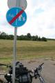

|
 | Az úgy kezdődött,
hogy elindultunk páran biciklitúrázni, Somogyvámos stratégiai csapásiránnyal, ahol épp most
zajlik a Krsna-völgyi búcsú, és az szép. Mindenki bevásárolt pótgumit, ragasztót, elemet a
lámpákba, akinek nem volt, táskát, s útnak indultunk.
Volna. Ha egyikünk gumija nem
közölte volna már indulás előtt, hogy "pffffsszt..."
Fél óra volt lemálházni, fejre fordítani, a lyukat megkeresni, befoltozni, és újra
visszapakolni rá.
No, végre elindultunk. Eszeveszett szélvihar, természetesen szemből. A
kisebb fák a földig feküdtek, mi meg terepfokozaton bandukoltunk, szinte egy helyben tekerve.
Átlagsebesség: 5 km/h. Na, lesz is ebből Somogyvámos... talán Székesfehérvár, késő
estig.
A következő meglepetést az országos bicikliút-térkép szolgáltatta, amelyen olyan
utak is be vannak jelölve, amelyeknek még a nyomvonalát sem tűzték ki. Lehet zötykölődni a
szántóföld szélén. Országos túraútvonal, az. Tankkal, esetleg.
Ilyen szép az
országos kerékpárút. Sima aszfalt, felfestés, lámpa, meg minden...
... de nem ám
a világ végéig!

Azért rendes,
hogy kitették a táblát
Úttalan utakon
elzötykölődtünk valameddig, mire ismét bicikliútra bukkantunk. Hogy hová vezet, azt persze nem
írták ki. Csak hosszas keresgélés után találtunk egy táblát, amely szerint a másik irányban
Gazdagrét a végállomás. Ezt az utat a változatosság kedvéért nem jelölte a térkép. Arra
zötykölődött egy párocska két iszonyúan lehasznált parasztlengőn, tőlük próbáltuk tudakolni, hol a
répában vagyunk, de kiderült, cseh turisták, és ők sem tudják, de az élet szép, bringázzunk
sokat.
Az út végül Törökbálintra vitt, tehát a helyes irányba, mert nekünk Biatorbágyra
kellett eljutnunk. Igen ám, de társaságunk egyik tagja alatt megint megszólalt a már
ismert "pffffsszt..." hang, és megint kezdhettük elölről a
lemálházást, felfordítást, lyukkeresést. Szerencsére vízbe nem kellett dugdosnunk, mert akkora
lyuk volt rajta, mint a négyes metró. Nyilván az irónia kedvéért történt a dolog épp egy
gumijavító műhely előtt, amely természetesen, szombat lévén, zárva volt.
A továbbra is
eszeveszett szélben szerencsétlenkedve megsajnált minket egy autós, és szólt, hogy a körforgalom
túl, jobbra találunk egy bicikliboltot. Bár hoztunk elég felszerelést, nagyon úgy nézett ki, hogy
a belsőt maga a felni szúrja ki folyton, ragasztás után elindultunk hát venni egy új belső
köpenyt. Mire odaértünk, megint defektes lett... A budaörsi sportáruházban egy nagyon kedves
eladósrác, akinek éppen 666 volt a jele, kisegített bennünket egy pumpával, miután az
agyonfoltozott helyett betettünk egy zsír új belsőt. Társaságunk többi tagja közben a Tescóban
próbált valami ehetőt találni, bár arra a szikkadt pizzára, amit hoztak, arra inkább a szarnakvaló
lenne a legmegfelelőbb kifejezés. Természetesen a pénztárnál végig kellett várniuk, mire az összes
proli befejezi a fizetgetést, hangos bazmegezéssel kussoltatva kisded kölykét, a pénztáros
egyenként aláírogatja az összes kajajegyet, beváltja a mindenféle pontokat, telefonál a problémás
árucikkek miatt, és kijön a szerelő, mert lerohadt a nyomtató a pénztárgépben.
A tizenegy
órai indulás után délután ötre már egészen a budaörsi Ikeáig jutottunk, ahol az a rohadt kerék már
megint kilyukadt, de észre sem vettük, mert úgy erőlködtünk a heves szélben. Itt untuk meg, és a
mozgásképtelenné vált járművet gazdájával együtt taxiba dugtuk, mi pedig feltettük a bringákat a
41-es villamosra, és hazamentünk a picsába. Majd ha mindenkinek használható bicója lesz, akkor
kimerészkedünk az országútra. Én azért megpróbáltam valamit pótolni a Krsna-völgy elmaradt
élményéből, és elmentem a Govinda étterembe, s hoztam haza egy rakat kaját. A rizst
kifelejtették.
Ez egy ilyen nap.
| | vissza a főoldalra |  |
| 1 2 3 4 5 | |  | | | | | | | | | | | | | | | | | | | | 1 2 3 4 5 |  |
|


túraszervező
túra-rss
mi ez?

legjobbak
legolvasottabbak
tartalomjegyzék
rss feed

AboryM
Caesar
Count Grishnackh
cscsabi
eürdüngh
Feki
GyalogKakukk
Ishukone
Kadzseszka
LACI1993
Mini
Muska
Rommel
Segi
Takezó
tommylee
vikcee
|